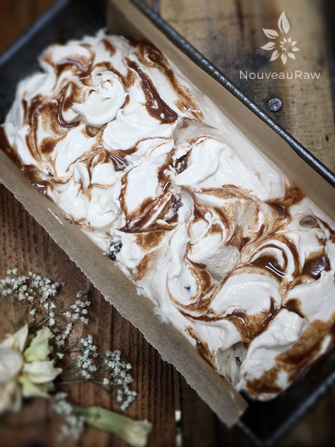

Cinnamon Raisin Swirl Ice Cream

~ raw, vegan, gluten-free, grain-free ~
Cinnamon Raisin Swirl Ice Cream has a creamy custard texture and is perfectly sweetened with cinnamon syrup laced throughout.
The crazy thing about ice cream is that I love ice cream scoops just about as much as the ice cream itself. I love antique ones mostly, you know the kind that has the gripper that you squeeze and the metal ring on the inside swipes around it, causing the ice cream to drop out of the metal cup? Well, believe it or not, but they are made for right-handed people!
As a lefty I scrap and scoop the ice cream out with my left hand, and that inner metal ring is on the wrong side, (for me) making the scoops come out, well not so round and firm. Craziness, who would’a thunk such a thing. As my husband and I would say… first world problems. hehe
Laced with Cinnamon
Anyway, the cinnamon “vein” that I speak about below didn’t come through so well in my ice cream, as I over mixed it in the inner layer. But I will assure you that it didn’t affect the flavor in the least bit. It is heaven! The raisins don’t turn into hard nuggets, they remained nice and chewy. My hubby is one happy camper which makes me a happy camper.
For the base of this recipe, I used young Thai coconut meat. The goal was to make an ice cream that wasn’t solely reliant upon nuts. Speaking of which, if you wanted to make this recipe nut-free, you could replace the almond milk with Tiger Nut or coconut milk. I hope you enjoy this recipe. Many blessings, amie sue
Ice Cream base:
Cinnamon Swirl:
- 1/4 cup raw coconut nectar or maple syrup
- 1/4 tsp Himalayan sea salt
- 1/2 tsp ground cinnamon
Preparation:
Ice cream base:
- In a high-speed blender, combine the almond milk, coconut meat, sweeteners, vanilla, coconut oil, and salt. Blend until nice and creamy. Hold off on adding the raisins just yet.
- Due to the volume and the creamy texture that we are going after, it is important to use a high-powered blender. It could be too taxing on a lower-end model.
- Blend until the filling is creamy smooth. You shouldn’t detect any grit. If you do, keep blending.
- This process can take 2-4 minutes, depending on the strength of the blender. Keep your hand cupped around the base of the blender carafe to feel for warmth. If the batter is getting too warm. Stop the machine and let it cool. Then proceed once cooled.
- Place the blender carafe in the fridge or freezer for 1 hour.
- If chilled in the fridge it can stay there for up to 8 hours. But don’t leave it in the freezer for more than an hour or it will freeze solid.
- Once chilled pour the batter into the ice cream maker and follow the manufacturer’s instructions.
- At the tail end of the ice cream being done, add the raisins and mix just until incorporated.
- Place the ice cream in a freezer-safe container(s) and swirl in the Cinnamon Swirl, don’t over-mix.
- Enjoy right away or place in the freezer.
- It is best to take the ice cream out of the freezer for about 10 minutes ahead of time, so it can have a chance to soften.
- Eat within 1 month.
Cinnamon swirl:
- In a small bowl combine the 3 ingredients and mix well.
- Set aside. You will drizzle this on the ice cream once it is done in the ice cream maker.
Freezing Suggestions for Ice Cream:
-
Use an ice cream machine. Follow the manufactures directions.
-
Freeze in popsicle molds or 3 oz Dixie cups with a popsicle stick inserted.
-
-
Store the ice cream in the very back of the freezer, as far away from the door as possible. Every time you open your freezer door you let in warm air. Keeping ice cream way in the back and storing it beneath other frozen-sold items will help protect it from those steamy incursions.
-
Ice cream is full of fat, and even when frozen, fat has a way of soaking up flavors from the air around it—including those in your freezer. To keep your ice cream from taking on the odors, use a container with a tight-fitting lid. For extra security, place a layer of plastic wrap between your ice cream and the lid.
-
To soften in the refrigerator, transfer ice cream from the freezer to the refrigerator 20-30 minutes before using. Or let it stand at room temperature for 10-15 minutes.
-
Wish to make your own raw ice cream, wonder what machine I might recommend, and more? Click (
here) to check out the Reference Library!

© AmieSue.com